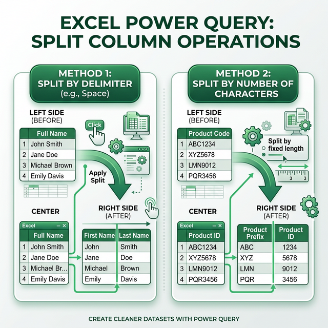

Tách dữ liệu trong Power Query
Nắm vững các kỹ thuật Split Column để tách một cột thành nhiều cột dựa trên dấu phân cách, số ký tự, vị trí, hoặc kiểu chữ.
5.1 Giới thiệu về Split Column
Trong thực tế, dữ liệu thường được ghi gộn trong một cột (ví dụ: họ và tên trong cùng một ô, mã vùng và số điện thoại, ngày và giờ...). Chức năng Split Column trong Power Query cho phép bạn tách chúng ra thành nhiều cột riêng biệt.

Cách truy cập Split Column
Trong Power Query Editor, chọn cột muốn tách → sử dụng một trong hai cách:
- Cách 1: Tab Home → nhóm Transform → Split Column
- Cách 2: Tab Transform → Split Column
- Cách 3: Chuột phải lên cột → Split Column
5.2 Split Column by Delimiter (Theo dấu phân cách)
Phương pháp phổ biến nhất — tách cột dựa trên một ký tự phân cách cụ thể (dấu cách, phẩy, gạch ngang, chấm phẩy...).
Các bước thực hiện
Chọn cột cần tách
Nhấp vào tiêu đề cột trong Data Preview
Chọn Split Column → By Delimiter
Home hoặc Transform → Split Column → By Delimiter
Cấu hình
Chọn hoặc nhập dấu phân cách. Chọn vị trí tách:
- At each occurrence of the delimiter: Tách tại mỗi lần xuất hiện
- At the left-most delimiter: Tách tại dấu phân cách đầu tiên (từ trái)
- At the right-most delimiter: Tách tại dấu phân cách cuối cùng (từ phải)
Ví dụ minh họa
| Dữ liệu gốc (Họ tên) | Delimiter | Kết quả Cột 1 | Kết quả Cột 2 |
|---|---|---|---|
| Nguyễn Văn A | Dấu cách (left-most) | Nguyễn | Văn A |
| Nguyễn Văn A | Dấu cách (right-most) | Nguyễn Văn | A |
| Nguyễn Văn A | Dấu cách (each) | Nguyễn | Văn | A |
| HN-001-2024 | Dấu gạch ngang (-) | HN | 001 | 2024 |
// Tách cột "Họ tên" theo dấu cách, tại vị trí cuối cùng
= Table.SplitColumn(
PreviousStep,
"Họ tên",
Splitter.SplitTextByEachDelimiter({" "}, QuoteStyle.Csv, true),
{"Họ đệm", "Tên"}
)5.3 Split Column by Number of Characters (Theo số ký tự)
Tách cột dựa trên số lượng ký tự cố định — hữu ích khi dữ liệu có độ dài chuẩn (mã sản phẩm, mã vùng...).
Cấu hình
- Number of characters: Số ký tự muốn tách (ví dụ: 3)
- Split:
- Once, as far left as possible — tách 1 lần từ trái
- Once, as far right as possible — tách 1 lần từ phải
- Repeatedly — tách lặp lại mỗi N ký tự
Ví dụ
| Dữ liệu gốc | Số ký tự | Kết quả Cột 1 | Kết quả Cột 2 |
|---|---|---|---|
| HCMSP001 | 3 (left) | HCM | SP001 |
| 0912345678 | 4 (left) | 0912 | 345678 |
| ABCDEF | 2 (repeatedly) | AB | CD | EF |
5.4 Split Column by Positions (Theo vị trí)
Chỉ định cụ thể các vị trí ký tự để tách — cho phép tách không đều:
Ví dụ
Mã nhân viên: HNIT0015 gồm:
- Vị trí 0-1: Mã chi nhánh (HN)
- Vị trí 2-3: Mã phòng ban (IT)
- Vị trí 4-7: Số thứ tự (0015)
Cấu hình: Nhập positions = 2, 4 → kết quả 3 cột: HN | IT | 0015
5.5 Split Column by Uppercase/Lowercase
Tách cột tại vị trí chuyển đổi giữa chữ hoa và chữ thường:
By Lowercase to Uppercase
Tách tại vị trí chữ thường chuyển sang chữ hoa:
| Gốc | Cột 1 | Cột 2 |
|---|---|---|
| hoChiMinh | ho | ChiMinh |
| firstName | first | Name |
By Uppercase to Lowercase
Tách tại vị trí chữ hoa chuyển sang chữ thường:
| Gốc | Cột 1 | Cột 2 | Cột 3 |
|---|---|---|---|
| HoChiMinh | Ho | Chi | Minh |
| FirstName | First | Name |
5.6 Split Column by Digit/Non-Digit
Tách tại vị trí chuyển đổi giữa ký tự chữ và ký tự số:
| Gốc | Cột 1 | Cột 2 |
|---|---|---|
| ABC123 | ABC | 123 |
| Room305 | Room | 305 |
| SP00125 | SP | 00125 |
5.7 Split Rows (Tách theo dòng)
Ngoài tách cột, Power Query còn cho phép tách một ô chứa nhiều giá trị thành nhiều dòng:
Chọn cột chứa nhiều giá trị
Ví dụ: cột "Sản phẩm" chứa "Laptop, Chuột, Bàn phím" trong 1 ô
Split Column → By Delimiter
Trong phần Advanced options → chọn Split into Rows (thay vì mặc định Split into Columns)
Ví dụ
| Trước (1 dòng) | Sau (3 dòng) |
|---|---|
| KH001 | Laptop, Chuột, Bàn phím | KH001 | Laptop KH001 | Chuột KH001 | Bàn phím |
5.8 Sort & Filter nâng cao
Ngoài Sort/Filter cơ bản, Power Query có nhiều kỹ thuật lọc mạnh mẽ:
Multi-level Sort
// Sort theo PhongBan (A→Z), sau đó theo Luong (lớn→nhỏ)
= Table.Sort(Source, {
{"PhongBan", Order.Ascending},
{"Luong", Order.Descending}
})Keep / Remove Rows
| Hàm | Mô tả | Menu |
|---|---|---|
| Table.FirstN | Giữ N dòng đầu | Home → Keep Rows → Keep Top Rows |
| Table.LastN | Giữ N dòng cuối | Home → Keep Rows → Keep Bottom Rows |
| Table.Range | Giữ từ dòng X, lấy N dòng | Home → Keep Rows → Keep Range of Rows |
| Table.AlternateRows | Giữ/bỏ dòng xen kẽ | Home → Remove Rows → Remove Alternate Rows |
| Table.RemoveRowsWithErrors | Xóa dòng có lỗi | Home → Remove Rows → Remove Errors |
| Table.SelectRows | Lọc theo điều kiện | Filter dropdown trên cột |
// Giữ 10 dòng đầu
= Table.FirstN(Source, 10)
// Giữ dòng từ vị trí 5, lấy 20 dòng
= Table.Range(Source, 5, 20)
// Xóa dòng xen kẽ (bỏ header phụ mỗi 50 dòng)
= Table.AlternateRows(Source, 49, 1, 50)
// Lọc phức hợp: nhiều điều kiện
= Table.SelectRows(Source, each
[PhongBan] = "IT" and
[Luong] >= 15000000 and
[NgayVaoLam] >= #date(2020,1,1)
)Bài tập 5.1: Tách Họ và Tên
Mục tiêu: Sử dụng Split by Delimiter để tách họ đệm và tên
- Tạo bảng Excel với cột Họ và tên:
- Nguyễn Văn An
- Trần Thị Bình
- Lê Hoàng Minh Châu
- Phạm Đức
- Hoàng Thị Kim Dung
- Mở Power Query → chọn cột "Họ và tên"
- Split Column → By Delimiter → chọn Space
- Chọn At the right-most delimiter → OK
- Đổi tên cột thành "Họ đệm" và "Tên"
- Close & Load → kiểm tra kết quả
Bài tập 5.2: Tách mã sản phẩm
Mục tiêu: Sử dụng Split by Number of Characters và by Positions
- Tạo bảng với cột MaSP:
- HCMDT001 (HCM = chi nhánh, DT = danh mục, 001 = STT)
- HNPK015
- DNMH023
- HCMPK100
- Mở Power Query
- Split Column → By Positions → nhập: 3, 5
- Đổi tên 3 cột thành: "Chi nhánh", "Danh mục", "STT"
- Close & Load → kiểm tra kết quả
Bài tập 5.3: Tách số điện thoại và năm sinh
Mục tiêu: Kết hợp nhiều kỹ thuật Split Column
- Tạo bảng với dữ liệu:
Thông tin SĐT-NgaySinh Nguyễn Văn A 0912-345-678 | 15/03/1990 Trần Thị B 0987-654-321 | 22/07/1995 Lê Văn C 0376-123-456 | 01/12/1988 - Mở Power Query
- Bước 1: Tách cột "SĐT-NgaySinh" by Delimiter | → thành "SĐT" và "NgàySinh"
- Bước 2: Tách cột "SĐT" by Delimiter - (each occurrence) → thành 3 phần
- Bước 3: Trim cột "NgàySinh" để loại bỏ khoảng trắng
- Bước 4: Đổi kiểu dữ liệu "NgàySinh" thành Date
- Close & Load